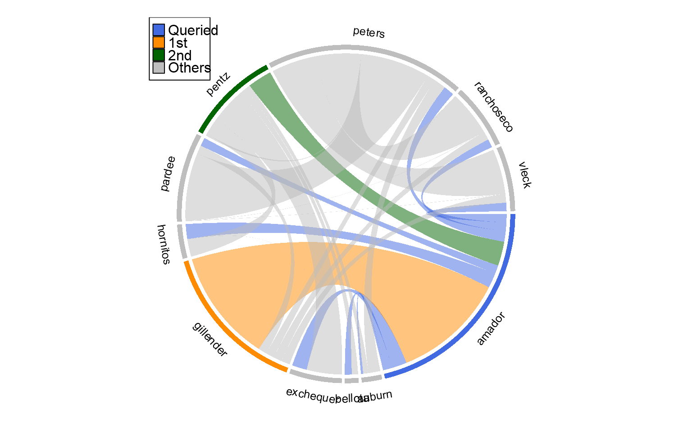

plotSoilRelationChordGraph.RdPlot a soil relationship diagram using a chord diagram.
plotSoilRelationChordGraph(m, s, mult = 2, base.color = "grey", highlight.colors = c("RoyalBlue", "DarkOrange", "DarkGreen"), add.legend = TRUE, ...)
| m | an adjacency matrix, no NA allowed |
|---|---|
| s | soil of interest, must exist in the column or row names of |
| mult | multiplier used to re-scale data in |
| base.color | color for all soils other than |
| highlight.colors | vector of 3 colors: soil of interest, 1st most common, 2nd most common |
| add.legend | logical, add a legend |
| ... | additional arguments passed to |
This function is experimental. Documentation pending. See http://jokergoo.github.io/circlize/ for ideas.
https://github.com/jokergoo/circlize
#># }